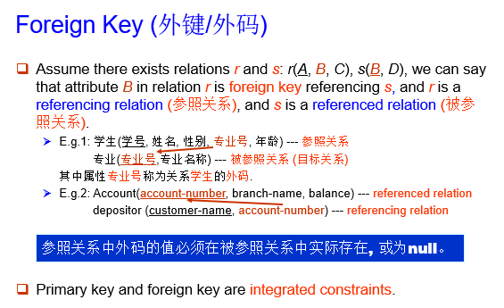

约 1963 个字 预计阅读时间 10 分钟
Chap 2 | Relational Model
章节启示录
本章节是课程的第二节内容，虽然但是，这是我第一篇DB的笔记。感觉前面的部分有点乱，但主要是一些定义和概念的熟悉。本章节上课讲的速度比较快，主要内容是关系基本模型、各种键值和各种关系代数式的表示，听起来难度不大，但要想自己解决题目还需要多加熟悉和练习。
1.关系模型¶
相关定义
1.关系模型非常简单和优雅。
2.关系数据库是基于关系模型的一个或多个关系的集合。
3.关系是包含行和列的表。
4.关系模型的主要优点是其简单的数据表示，并且可以轻松表达复杂的查询。
一个简单的例子：

2.关系数据库的基本结构¶
2.1基本定义¶
一般地，给出一个集合的集群（多个集合的意思，我自己取的名字）\(D_1,D_2,……，D_n(D_i=a_{ij} |_{j=1……k})\),
关系 \(r\) 则是 \(D_1×D_2×……×D_n\) （笛卡尔积）的一个子集。
因此，一个关系是一个 $n-tuples （可以理解为行）的集合 \((a_{1j},a_{2j},……，a_{nj})\)，且 \(a_{ij}∈D_i(i∈[1,n])\)
一个实际例子：
\(D_1\) = 导师集合 = {张清玫, 刘逸},
\(D_2\) = 专业集合 = {计算机, 信息},
\(D_3\) = 学生集合 = {李勇, 刘晨, 王名}
则\(D_1×D_2×D_3\)=
{(张清玫, 计算机, 李勇),
(张清玫, 计算机, 刘晨),
(张清玫, 计算机, 王名),
(张清玫, 信 息, 李勇),
(张清玫, 信 息, 刘晨),
(张清玫, 信 息, 王名),
(刘 逸, 计算机, 李勇),
(刘 逸, 计算机, 刘晨) }
一个代数化例子：
\(customer-name\) = {Jones, Smith, Curry, Lindsay}
\(customer-street\) = {Main, North, Park}
\(customer-city\) = {Harrison, Rye, Pittsfield}
则 \(r\) =
{(Jones, Main, Harrison),
(Smith, North, Rye),
(Curry, North, Rye),
(Lindsay, Park, Pittsfield)}
关系理论第一范式
关系中的所有分量不可再分，即它是原子的（atomic）。
关系中的所有分量（attribute）其实就是像excel中的表的每一列的属性值，每一个属性值的取值范围称为它的域（domain）。
- 一个特殊的值 \(NULL\) 存在于所有的域中，\(NULL\) 的含义有两种，分别是：①不存在 ②存在但不知道。
两个定义（relation schema和relation instance）
- 1.relation schema（关系架构）：它描述了关系中的结构。直接看例子。
\(Student-schema\) = (sid: string, name: string, sex: string, age: int, dept: string)
我们可以把这个架构简写为：
\(Student-schema\) = (sid, name, sex, age, dept)
那么我们如果把这个例子抽象成一个理论定义，接下来的表述应该是这样的：
假设\(A_1,A_2,……,A_n\) 是属性值（attributes），那么 \(R=(A_1,A_2,……,A_n)\) 是一个关系架构（relation schema）。
而\(r(R)\)则是一个在关系架构\(R\)中的关系。 - 2.relation instance（关系实例）：是指关系中的具体的值，其中行被称为tuple，列被称为attribute。
2.2Key(码/键)¶
几个键
- 1.超码（superkey）：在一个关系中唯一地标识一个元组。
e.g:{ID} 和 {ID，name} 都是超码
- 2.候选码(candidate key)：超码的最小子集。
候选码的任意真子集都不可能是超码，候选码就是最小的超码。
e.g:{ID}是一个候选码
- 3.主码（primary key）：是候选码之一。唯一或者没有。由数据库设计者指定，不指定的话就没有主码。一般主码会有下划线标注
- 4.外码（foreign）:关系 \(r1\) 的属性中包含关系 \(r2\) 的主码,该主码就是 \(r1\) 的外码。
3.代数表达式¶
3.1基本代数关系表达式¶
1.选择（Select）
\(\large\sigma_p(r)=\{t|t∈ r\ and\ p(t)\}\)
e.g:\(\large\sigma_{branch-name='Perryridge'}(account)\)

2.投影（Project）
\(\large\Pi_{A_1,A_2,……，A_k}(r)\)
e.g:\(\large\Pi_{account-number,balance}(account)\)

3.并（Union）
\(\large r \cup s = \{t|t∈r\ or\ t∈s\}\)
e.g:\(\large\Pi_{customer-name}(depositor) \cup \Pi_{customer-name}(borrower)\)

4.差（Set Difference）
\(r-s=\{t|t∈r\ and\ t\ \notin s\}\)
e.g:

5.笛卡尔积（Cartesian Product）
e.g:
\(r×s=\{\{t,q\}|t∈r \ and \ q∈s\}\)
6.重命名（Rename）
\(\rho_{Newname}(E)\)
一个例子🌰
下面将借助一个银行的例子熟悉以上提到的6个基本操作。
- Find all loans of over $1200.
\(\large\sigma_{amount>1200}(loan)\)
- Find the loan number for each loan of an amount greater than $1200.
\(\large\Pi_{loan-number}(\sigma_{amount>1200}(loan))\)
- Find the names of all customers who have a loan, or an account, or both, from the bank.
\(\large\Pi_{customer-name}(borrower) \cup \Pi_{customer-name}(depositor)\)
- Find the names of all customers who at least have a loan and an account at bank. \(\large\Pi_{customer-name}(borrower) \cap \Pi_{customer-name}(depositor)\)
- Find the names of all customers who have a loan at the Perryridge branch.
Query 1:
\(\large\Pi_{customer-name}(\sigma_{branch-name='Perryidge'}\sigma_{borrower.loan-number=loan.loan-number}(borrower×loan))\)
Query 2:
\(\large\Pi_{customer-name}(\sigma_{borrower.loan-number=loan.loan-number}(borrower×(\sigma_{branch-name='Perryridge'}(loan))))\)
第二个算法要更加的好，因为它在做笛卡尔积之前做了一些筛选，减少了表的大小。
- Find the largest account balance (i.e., self-comparison).
\(Step1\):Rename account relation as d.
\(Step2\):Find the relation including all balances except the largest one. \(\large\Pi_{account.balance}(\sigma_{account.balance<d.balance}(account×\rho_d(account)))\)
\(Step3\):Find the largest account balance.
\(\large\Pi_{balance}(account)-\Pi_{account.balance}(\sigma_{account.balance<d.balance}(account×\rho_d(account)))\)

3.2其他代数关系表达式¶
1.交（Set Intersection）
\(\large r\cap s=\{t|t∈ r\ and\ t∈s\}\)
提示：\(\large r\cap s=r-(r-s)\)
e.g:

2.自然连接（Natural Join）
若\(R=(A,B,C,D),S=(B,D,E)\)
\(\large r\bowtie s=\Pi_{r.A,r.B,r.C,r.D,s.E}(\sigma_{r.B=s.B\ \cap \ r.D=s.D}(r×s))\)
e.g:
注意：
(1) r, s必须含有共同属性(名和域都对应相同);
(2) 连接二个关系中同名属性值相等的元组;
(3) 结果属性是二者属性集的并集, 但消去重名属性。
3.除（Division）
\(\large r\div s=\{t|t∈\Pi_{R-S}(r)\ \cap\ [\forall u ∈ s(tu ∈ r)]\}\)
e.g:
4.赋值（Assignment）
\(r\gets s\)
e.g:
\(\large temp \gets \Pi_{R-S}(r)\)
一个例子🌰
同样地我们来看一个例子。

- Find all customers who have an account from at least the “Downtown” and the “Uptown” branches.
Query1:
\(\large\Pi_{customer-name}(\sigma_{branch-name='Downtown'}(depositor\bowtie account))\newline \cap\Pi_{customer-name}(\sigma_{branch-name='Uptown'}(depositor\bowtie account))\) Query2:
\(\large\Pi_{customer-name,branch-name}(depositor\bowtie account)\div \rho_{temp(branch-name)}(\{('Downtown'),('Uptown')\})\)
- Find all customers who have an account at all branches located in Brooklyn city. \(\large\Pi_{customer-name,branch-name}(depositor \bowtie account)\div \Pi_{branch-name}(\sigma_{branch-city='Brooklyn'}(branch))\)
- 查询选修了全部课程的学生学号和姓名
涉及表: 课程信息course(cno, cname, pre-cno, credits), 选课信息 enrolled(sno, cno, grade), 学生信息student(sno, sname, sex, age)
当涉及到求“全部”之类的查询，常用“除法”。
\(Step1\):找出全部课程号：\(\Pi_{Cno}(Course)\)
\(Step2\):找出选修了全部课程的学生的学号：\(\Pi_{Sno,Cno}(enrolled)\div \Pi_{Cno}(Course)\)
\(Step3\):与student表自然连接（连接条件Sno）获得学号、姓名：\(\Pi_{Sno,Cno}(enrolled)\div \Pi_{Cno}(Course) \bowtie \Pi_{Sno,Sname}(student)\)
运算顺序
- project \(\Pi\)
- select \(\sigma\)
- cartesian product \(×\)
- join,divison \(\bowtie \ \div\)
- intersection \(\cap\)
- union,difference \(\cup \ -\)
3.3扩展代数关系表达式¶
1.广义投影（Generalized Projection）
通过允许在投影列表中使用算术函数来扩展投影操作。
\(\large\Pi_{F_1,F_2,……，F_n}(E)\)
e.g:
给定一个关系\(credit-info(customer-name, limit, credit-balance)\)
\(\large\Pi_{customer-name,limit'-'credit-balance}(credit-info)\)
'-'表示减法而不是连接词。
这个代数关系表达式找出了每个人可以多花多少钱。
2.聚合函数（Aggregate Functions）
聚合函数接受值的集合并返回单个值作为结果。
- \(avg\): average value
- \(min\): minimum value
- \(max\): maximum value
- \(sum\): sum of values
- \(count\): number of values
\(G_1,G_2,……，G_n \ \LARGE g_{\large F_1(A_1),F_2(A_2),……，F_n(A_n)}\large(E)\)
e.g:

3.外部连接（Outer Join）
连接操作的扩展，可避免信息丢失。
$\large ⟕ $ 和 $\large ⟖ $
e.g:


Null Values
关于NULL值的一些讨论。

复习时的一些补充
- Attribute values are (normally) required to be atomic, i.e., indivisible (--- 1st NF, 关系理论第一范式) E.g., multivalued attribute values are not atomic. E.g., composite attribute values are not atomic.
- 
- 参照关系中外码的值必须在被参照关系中实际存在, 或为null。
- 投影中多值属性被删除
- If attributes of r(R) and s(S) are not disjoint, then renaming for attributes must be used. （同名属性值需要重命名）
- If a relational-algebra expression E has arity n, then $\rho x(A1, A2, …, An)(E) $ (对relation E及其attributes都重命名)
- 聚合结果没有名称,可以使用重命名操作为其命名。为方便起见，我们允许在聚合操作中重命名。
- Result of select predicate is treated as false if it evaluates to unknown